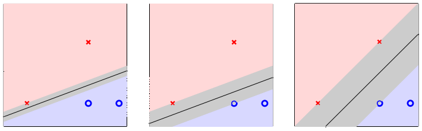
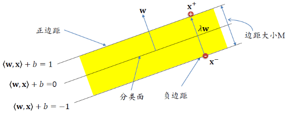

<!DOCTYPE html>


<html lang="zh-CN">
  

    <head>
      <meta charset="utf-8" />
       
      <meta name="keywords" content="c,c++,java,python,leetcode,algorithm,reading,life,moods,machine-learning,data-mining,deep-learning,AI" />
       
      <meta name="description" content="一个分享机器学习、算法与数据结构，个人学习心得、读书笔记、生活的博客。" />
      
      <meta
        name="viewport"
        content="width=device-width, initial-scale=1, maximum-scale=1"
      />
      <title>『我爱机器学习』深入理解SVM(一) 原始问题和对偶问题 |  细语呢喃</title>
  <meta name="generator" content="hexo-theme-ayer">
      
      <link rel="shortcut icon" href="/images/site/avatar.jpg" />
       
<link rel="stylesheet" href="/dist/main.css">

      <link
        rel="stylesheet"
        href="https://cdn.jsdelivr.net/gh/Shen-Yu/cdn/css/remixicon.min.css"
      />
      
<link rel="stylesheet" href="/css/custom.css">
 
      <script src="https://cdn.jsdelivr.net/npm/pace-js@1.0.2/pace.min.js"></script>
       

<script type="text/javascript">
(function(i,s,o,g,r,a,m){i['GoogleAnalyticsObject']=r;i[r]=i[r]||function(){
(i[r].q=i[r].q||[]).push(arguments)},i[r].l=1*new Date();a=s.createElement(o),
m=s.getElementsByTagName(o)[0];a.async=1;a.src=g;m.parentNode.insertBefore(a,m)
})(window,document,'script','//www.google-analytics.com/analytics.js','ga');

ga('create', 'UA-69270533-1', 'auto');
ga('send', 'pageview');

</script>


 
<script>
var _hmt = _hmt || [];
(function() {
	var hm = document.createElement("script");
	hm.src = "https://hm.baidu.com/hm.js?d6a8cb42bd9ae728375b6726daa75e95";
	var s = document.getElementsByTagName("script")[0]; 
	s.parentNode.insertBefore(hm, s);
})();
</script>


      <!-- mermaid -->
      
    </head>
  </html>
</html>


<body>
  <div id="app">
    
    <script data-ad-client="ca-pub-1580254183546533" async src="https://pagead2.googlesyndication.com/pagead/js/adsbygoogle.js"></script>
    
    
      
    <main class="content on">
      <section class="outer">
  <article
  id="post-machine-learning-support-vector-machine-1"
  class="article article-type-post"
  itemscope
  itemprop="blogPost"
  data-scroll-reveal
>
  <div class="article-inner">
    
    <header class="article-header">
       
<h1 class="article-title sea-center" style="border-left:0" itemprop="name">
  『我爱机器学习』深入理解SVM(一) 原始问题和对偶问题
</h1>
 

      
    </header>
     
    <div class="article-meta">
      <a href="/machine-learning-support-vector-machine-1/" class="article-date">
  <time datetime="2018-03-19T12:40:20.000Z" itemprop="datePublished">2018-03-19</time>
</a> 
  <div class="article-category">
    <a class="article-category-link" href="/categories/study/">study</a> / <a class="article-category-link" href="/categories/study/%E6%9C%BA%E5%99%A8%E5%AD%A6%E4%B9%A0/">机器学习</a>
  </div>
  
<div class="word_count">
    <span class="post-time">
        <span class="post-meta-item-icon">
            <i class="ri-quill-pen-line"></i>
            <span class="post-meta-item-text"> 字数统计:</span>
            <span class="post-count">3.6k</span>
        </span>
    </span>

    <span class="post-time">
        &nbsp; | &nbsp;
        <span class="post-meta-item-icon">
            <i class="ri-book-open-line"></i>
            <span class="post-meta-item-text"> 阅读时长≈</span>
            <span class="post-count">16 分钟</span>
        </span>
    </span>
</div>
 
       
        <div class="word_count">
    <span class="post-meta-item-icon">
        <i class="ri-eye-fill"></i> 
        阅读数:<span id="/machine-learning-support-vector-machine-1/" data-flag-title="『我爱机器学习』深入理解SVM(一) 原始问题和对偶问题" class="leancloud_visitors">0</span>次
    </span>
</div>
      
    </div>
      
    <div class="tocbot"></div>


  
    <div class="article-entry" itemprop="articleBody">
       
  <p>本文尽可能通俗、详细的介绍支持向量机SVM内容。</p>
<p>包括</p>
<ul>
<li>线性可分SVM</li>
<li>SVM对偶问题</li>
</ul>
<a id="more"></a>
<h2 id="线性可分svm">线性可分SVM</h2>
<p>回顾一下感知机，</p>
<blockquote>
<p>数据：<span class="math inline">\(\{({\bf x_1}, y_1),({\bf x_2}, y_2),\cdots,({\bf x_n}, y_n) \}, \ y \in \{-1, + 1\}\)</span></p>
<p>模型为： <span class="math display">\[
f(x) = {\rm sign}({\bf w^Tx}+b)
\]</span> 其损失函数为所有误分类点到超平面S的总函数距离： <span class="math display">\[
-\sum_{x_i\in M}y_i({\bf w^T x_i} + b）
\]</span> 感知机选取不同的初值或选取不同的分类点，解可能不同。</p>
</blockquote>
<p>PS: 支持向量机的输入和感知机是一样的。</p>
<p>那么感知机的许多解中，哪个比较好？比如下面的这三个：</p>
<figure>
<figcaption aria-hidden="true">there_classifiers_fatness</figcaption>
</figure>
<p>直观上看，我们希望得到的是第三个结果，因为分类的边界离样本点远，这样，容错性（鲁棒性robust）会比较好。</p>
<p>仍然设我们的平面为<span class="math inline">\({\bf w^Tx}+b\)</span>，我们有如下优化问题： <span class="math display">\[
\begin{align*}
\max_{\bf w,b} \hspace{3ex}&amp;{\rm margin}({\bf w},b) \tag{1-1}\\
{\rm s.t.}\hspace{3ex} &amp;y_i{\bf (w^\mathsf{T}x}_i  + b)&gt; 0, \hspace{3ex}i=1,2..n\\
&amp;{\rm margin}({\bf w},b) = \min_{i=1,\ldots,m}{\rm distance}({\bf x}_i, {\bf w},b)
\end{align*}
\]</span> 上面的第一个约束条件我们已经在感知机中见过，表达的意思就是全部样本都分类正确（这里我们先将设数据集线性可分），其中<span class="math inline">\(y_i({\bf w^T x_i} + b)\)</span>也叫做<strong>函数距离</strong>。第二个优化条件则是定义边界为样本到超平面最短的距离，这个距离稍后详解，我们的目标函数则是最大化它。</p>
<p>在感知机中，我们证明过点x到平面的距离为： <span class="math display">\[
{\rm distance}({\bf x}_i, {\bf w},b) = \frac{1}{|\!|{\bf w}|\!|}|{\bf w^T x_i} + b|
\]</span> 在数据集<strong>线性可分</strong>的情况下，分离超平面对数据集中每个点都有<span class="math inline">\(y_i(w^Tx_i+b)&gt;0\)</span>。因此，距离的计算公式又可以写为: <span class="math display">\[
{\rm distance}({\bf x}_i, {\bf w},b) = \frac{1}{|\!|{\bf w}|\!|}y_i({\bf w^T x_i} + b)\tag{1-2}
\]</span> 1-2这个距离称为<strong>几何距离</strong>。函数距离和几何距离有啥关系呢？为什么要用几何距离呢？</p>
<p>几何距离就相当于函数距离做了规范化。函数距离只能表示分类的正确性，但是不同超平面的系数是可以放缩的，比如<span class="math inline">\({\bf w^T x_i} + b = 0\)</span>和 <span class="math inline">\(3{\bf w^T x_i} +3 b = 0\)</span> 所表示的超平面是一样的，但是函数距离后者是前者的3倍！因此，确定超平面的时候，应该使用几何距离。</p>
<p>于是，我们假定让点到超平面的函数最小几何距离为<span class="math inline">\(\gamma\)</span>，式1-1可以写为： <span class="math display">\[
\begin{align*}
\max_{\bf w,b} \hspace{3ex}&amp;  \gamma\tag{1-3}\\
{\rm s.t.}\hspace{3ex} &amp; \frac{y_i({\bf w^T x_i} + b)}{|\!|{\bf w}|\!| }  \ge \gamma, \hspace{3ex}i=1,2,\cdots ,n
\end{align*}
\]</span></p>
<p>PS: 原来的<span class="math inline">\(y_i({\bf w^T x_i} + b) &gt;0\)</span>的条件限制不如新的条件，因此略去了。</p>
<p>考虑函数间隔和几何间隔的关系，可以将1-3写为： <span class="math display">\[
\begin{align*}
\max_{\bf w,b} \hspace{3ex}&amp; \frac{ \gamma}{|\!|{\bf w}|\!| }\tag{1-3}\\
{\rm s.t.}\hspace{3ex} &amp;y_i({\bf w^T x_i} + b)\ge \gamma, \hspace{3ex}i=1,2,\cdots ,n 
\end{align*}
\]</span> 原来<span class="math inline">\(\gamma\)</span>是点到超平面的最小几何距离，现在仍然是<span class="math inline">\(\gamma\)</span>则是最小的函数距离，但是优化的目标仍然是几何距离。</p>
<p>现在，可以进一步化简，<span class="math inline">\(\gamma\)</span>的取值其实对约束条件没有影响，也对优化目标没有影响。因为假设<span class="math inline">\(\bf w\)</span>和b按比例变为<span class="math inline">\(\lambda {\bf w}\)</span>和<span class="math inline">\(\lambda b\)</span>，则函数间隔也变成了<span class="math inline">\(\lambda\gamma\)</span>（PS：同时可以看出几何间隔还是一样的 ）。因此，不妨令<span class="math inline">\(\gamma = 1\)</span>，于是可以重写问题如下： <span class="math display">\[
\begin{align*}
\max_{\bf w,b} \hspace{3ex}&amp; \frac{1}{|\!|{\bf w}|\!|}\\
{\rm s.t.}\hspace{3ex} &amp; y_i({\bf w^T x_i} + b)  \ge 1, \hspace{3ex} i=1,2,\cdots ,n
\end{align*}
\]</span> 注意最大化 <span class="math inline">\(\frac{1}{||w||}\)</span>和最小化<span class="math inline">\(\frac{1}{2}||{\bf w}||^2 =\frac{1}{2}{\bf w^Tw}\)</span>是等价的，因此有： <span class="math display">\[
\begin{align*}
\min_{\bf w,b}\hspace{3ex} &amp; \frac{1}{2} {\bf w^Tw}\tag{1-4}\\
{\rm s.t.}\hspace{3ex} &amp; y_i({\bf w^T x_i} + b)  \ge 1, \hspace{3ex}i=1,2,\cdots ,n
\end{align*}
\]</span> 式1-4所表示的优化问题就称为<strong>SVM的原始问题</strong>。</p>
<p>在很多介绍SVM的资料中（包括西瓜书），对于SVM的原始问题都十分简单。它们都很直接的说：限制条件为<span class="math inline">\(y_i({\bf w^T x_i} + b) \ge 1\)</span>，然后直接做类似如下推导：</p>
<p> <span class="math display">\[
\begin{align}
&amp;{\bf w^T x^+} + b = +1 &amp;
\\&amp;{\bf w^T x^-} + b =-1 &amp;
\\联立两式：&amp;{\bf w^T (x^+ - x^-) } = 2&amp;
\\ 因为：&amp;  {\bf x^+ = x^- + \lambda w }  &amp;\Rightarrow \lambda = \frac{2}{\bf w^Tw}
\\间距和为：&amp; |\!|\bf{x^+ - x^-}|\!| = |\!|\lambda w|\!|=  \frac{2}{\bf w^Tw} |\!|w|\!| = \frac{2}{|\!|w|\!|}
\\然后最大化&amp;\frac{2}{|\!|w|\!|}和最小化 \frac{1}{2}{\bf w^Tw}等价
\end{align}
\]</span> 但其实限制条件是从上面这样缩放而来的，因此本文关于原问题的基本是按照林轩田老师和李航老师的思路写的。</p>
<p>这个图很直观的反应了<strong>最大间隔分离超平面完全由离该超平面最近的点定义</strong>，其它点如果从数据集中删除掉，对最优超平面的选择没有任何影响。这些决定了最大间隔分离超平面的点通常被称为<strong>支持向量</strong>，因此SVM的意思就是使用支持向量学习出最优的超平面。</p>
<h3 id="二次规划求解">二次规划求解</h3>
<p>式1-4所表示的SVM原始问题是一个凸的二次规划问题，可以直接用现成的优化计算包求解。</p>
<p>在此之前，需要表示为标准形式。</p>
<p>二次规划的标准形式为： <span class="math display">\[
\begin{align*}
\min_{\bf u} &amp; \hspace{3ex}\frac{1}{2}{\bf u}^\mathsf{T}{\rm Q}{\bf u} + {\bf p^\mathsf{T}u} \\
{\rm s.t.} &amp; \hspace{3ex}{\bf a}_i^\mathsf{T}{\bf u} \ge c_i, {\rm for\  }i =1,2,\ldots, M
\end{align*}
\]</span></p>
<p>根据和1-4的对应关系，设维度为d得： <span class="math display">\[
\begin{align*}
{\bf u} &amp;= \left[\begin{array}{c}b \\ {\bf w}\end{array}\right] \\
{\rm Q} &amp;= \left[\begin{matrix} 0 &amp; {\bf 0}_d^\mathsf{T} \\ {\bf 0}_d &amp; {\rm I}_d\end{matrix}\right] \\
{\bf p} &amp;= {\bf 0}_{d+1} \\
{\bf a}_n^\mathsf{T} &amp;= y_n\left[\begin{array}{c}1 &amp; {\bf x}_n^\mathsf{T}\end{array}\right] \\
c_n &amp;= 1 \\
M &amp;= n
\end{align*}
\]</span></p>
<h2 id="svm对偶问题">SVM对偶问题</h2>
<p>虽然可以求解1-4的SVM原始问题，但是我们可以利用拉格朗日乘子法得到对偶问题。这样的好处是：</p>
<ol type="1">
<li>对偶问题往往更容易求解</li>
<li>自然引入核函数，进而推广到非线性分类问题</li>
</ol>
<p>好处2在下一小结再讲。现在讲讲好处1。</p>
<p>在线性回归一章中，讲到可以进行空间的变换。</p>
<p>设<span class="math inline">\({\bf z} = \Phi({\bf x})\)</span>, 则SVM 原始问题写为： <span class="math display">\[
\begin{align*}
\min_{\bf w,b}\hspace{3ex} &amp; \frac{1}{2} {\bf w^Tw}\\
{\rm s.t.}\hspace{3ex} &amp; y_i({\bf w^T \Phi({x})} + b)  \ge 1, \hspace{3ex}i=1,2,\cdots ,n 
\end{align*}
\]</span> x经过非线性特征转换以后，映射到新空间里得到的z通常维度比较高。</p>
<p>记映射前维度为d, 映射后向量的维度为<span class="math inline">\(\tilde{d}\)</span>，则求解二次规划时需要面对<span class="math inline">\(\tilde{d} + 1\)</span>个变量(<strong>w</strong>和b)和n个限制条件。</p>
<p>因此，需要探索一种方法使得SVM不去依赖<span class="math inline">\(\tilde{d}\)</span>。</p>
<h3 id="拉格朗日乘子法">拉格朗日乘子法</h3>
<p>首先讲解拉格朗日乘子法，给定优化问题： <span class="math display">\[
\begin{align*}
\min_{\bf x} &amp; \hspace{3ex} f({\bf x}) \\
{\rm s.t.} &amp; \hspace{3ex} g_i({\bf x}) \le 0, \ {\rm for\  }i =1,2,\ldots, m \\
&amp; \hspace{3ex} h_j({\bf x}) = 0, \ {\rm for\  }j =1,2,\ldots, n
\end{align*}
\]</span> 可以写出拉格朗日函数： <span class="math display">\[
\mathcal{L({\bf x},{\boldsymbol \alpha}, {\boldsymbol \beta})} = f({\bf x}) + \sum_{i=1}^m\alpha_ig_i({\bf x}) +  \sum_{j=1}^n\beta_jh_j({\bf x}), \alpha_i \ge 0
\]</span> 则原问题等价于： <span class="math display">\[
\begin{align}
\min_{ {\bf x} } \max_{ {\boldsymbol \alpha}, {\boldsymbol \beta} } &amp; \tag{2-1}\hspace{3ex} \mathcal{L({\bf x},{\boldsymbol \alpha}, {\boldsymbol \beta})} \\
{\rm s.t.} &amp;  \hspace{3ex} \alpha_i \ge 0
\end{align}
\]</span> 为什么呢？做个简单的推导： <span class="math display">\[
\begin{align}
    &amp;\min_{ {\bf x} }  \max_{ {\boldsymbol \alpha}, {\boldsymbol \beta} }   \mathcal{L({\bf x},{\boldsymbol \alpha}, {\boldsymbol \beta})}
   \\ = &amp;  \min_{ {\bf x} } \left( f(x) +  \max_{ {\boldsymbol \alpha}, {\boldsymbol \beta} }  \left( \sum_{i=1}^m\alpha_ig_i({\bf x}) + \sum_{j=1}^n\beta_jh_j({\bf x})\right) \right)
   \\=&amp;  \min_{ {\bf x} } \left( f(x) +\begin{cases}
                                                    0&amp; \text{u满足约束条件}\\
                                                    \infty&amp; \text{otherwise}
                                                    \end{cases}
\right) 
\end{align}
\]</span></p>
<ul>
<li>当g不满足约束条件的时候（<span class="math inline">\(g_i(x) \gt 0\)</span>），我们内层优化取max，因此<span class="math inline">\(\alpha_i = \infty \Rightarrow \alpha_ig_i({\bf x}) = \infty\)</span></li>
<li>当g满足约束条件的时候（<span class="math inline">\(g_i(x) \le 0\)</span>），我们内层优化取max，因此<span class="math inline">\(\alpha_i =0 \Rightarrow \alpha_ig_i({\bf x}) = 0\)</span></li>
<li>当h不满足约束条件的时候（<span class="math inline">\(h_j(x) \ne0\)</span>），同理可以取<span class="math inline">\(\beta_j= \rm sign(h_j({\bf x})) \infty \Rightarrow \beta_jh_j({\bf x}) = \infty\)</span></li>
<li>当h满足约束条件的时候（<span class="math inline">\(h_j(x) =0\)</span>），同理可以取<span class="math inline">\(\beta_jh_j({\bf x}) =0\)</span></li>
</ul>
<p>为了使2-1达到优值，需要满足如下条件（<strong>KKT条件</strong>）：</p>
<ul>
<li>主问题可行： <span class="math inline">\(g_i({\bf x}) \le 0, h_i({\bf x}) = 0\)</span></li>
<li>对偶问题可行： <span class="math inline">\(\alpha_i \ge 0\)</span></li>
<li>互补松弛: <span class="math inline">\(\alpha_i g_i({\bf x}) = 0\)</span></li>
</ul>
<p>主问题可行是上面推导的结果，对偶问题可行为2-1的约束项。</p>
<p>互补松弛是主问题和对偶问题都可行的条件下的最大值。</p>
<h3 id="拉格朗日对偶问题">拉格朗日对偶问题</h3>
<p>定义2-1的对偶问题为： <span class="math display">\[
\begin{align*}
 \max_{ {\boldsymbol \alpha}, {\boldsymbol \beta} }\min_{ {\bf x} } &amp; \tag{2-2}\hspace{3ex} \mathcal{L({\bf x},{\boldsymbol \alpha}, {\boldsymbol \beta})} \\
{\rm s.t.} &amp;  \hspace{3ex} \alpha_i \ge 0
\end{align*}
\]</span> 对偶问题是原问题的下界，即： <span class="math display">\[
\max_{ {\boldsymbol \alpha}, {\boldsymbol \beta} }\min_{ {\bf x} } \mathcal{L({\bf x},{\boldsymbol \alpha}, {\boldsymbol \beta})} \le
\min_{ {\bf x} } \max_{ {\boldsymbol \alpha}, {\boldsymbol \beta} } \mathcal{L({\bf x},{\boldsymbol \alpha}, {\boldsymbol \beta})}
\]</span> 因为总是有 <span class="math inline">\(\min_{ {\bf x} } \mathcal{L({\bf x},{\boldsymbol \alpha}, {\boldsymbol \beta})} \le\min_{ {\bf x} } \max_{ {\boldsymbol \alpha}, {\boldsymbol \beta} } \mathcal{L({\bf x},{\boldsymbol \alpha}, {\boldsymbol \beta})}\)</span> 成立，对任意可能的值求极值，肯定不如直接求到的极值大。有句俗语叫“瘦死的骆驼比马大”说的就是这个道理。</p>
<p>2-2只是交换了max-min的顺序，得到的就是<strong>拉格朗日对偶问题</strong>。</p>
<h3 id="svm-对偶问题推导">SVM 对偶问题推导</h3>
<p>首先变换SVM原问题为： <span class="math display">\[
\begin{align*}
\min_{\bf w,b}\hspace{3ex} &amp; \frac{1}{2} {\bf w^Tw}\\
{\rm s.t.}\hspace{3ex} &amp; 1 -   y_i({\bf w^T x_i} + b)  \le0, \hspace{3ex}i=1,2,\cdots ,n 
\end{align*}
\]</span> 可以写出拉格朗日函数如下： <span class="math display">\[
\mathcal{L({\bf w},b,{\boldsymbol \alpha})} =\frac{1}{2} {\bf w^Tw} + \sum_{i=1}^n\alpha_i \left(  1 -   y_i({\bf w^T x_i} + b)  \right)  , \alpha_i \ge 0 \tag{2-3}
\]</span> 根据拉格朗日对偶性，得到对偶问题为： <span class="math display">\[
\begin{align*}
 \max_{ {\boldsymbol \alpha} }\min_{ {\bf w} , b} &amp; \hspace{3ex} \mathcal{L({\bf w},b,{\boldsymbol \alpha})} \\
{\rm s.t.} &amp;  \hspace{3ex} \alpha_i \ge 0, i = 1,2,\cdots ,n
\end{align*}\tag{2-4}
\]</span> 求解<span class="math inline">\(\min_{ {\bf w} , b} \mathcal{L({\bf w},b,{\boldsymbol \alpha})}\)</span>，拉格朗日函数2-3分别对<strong>w</strong>和b求偏导，得： <span class="math display">\[
\frac{\partial\mathcal{L({\bf w},b,{\boldsymbol \alpha})} }{\partial{\bf w} } = {\bf w} - \sum_{i=1}^n\alpha_iy_i{\bf x_i}\\
\frac{\partial\mathcal{L({\bf w},b,{\boldsymbol \alpha})} }{\partial b} = -\sum_{i=1}^n \alpha_iy_i
\]</span> 令偏导为0，得: <span class="math display">\[
{\bf w}  = \sum_{i=1}^n \alpha_iy_i{\bf x_i}\tag{2-5}
\]</span></p>
<p><span class="math display">\[
\sum_{i=1}^n \alpha_iy_i = 0 \tag{2-6}
\]</span></p>
<p>带入拉格朗日函数2-3得： <span class="math display">\[
\min_{ {\bf w},b}\mathcal{L({\bf w},b,{\boldsymbol \alpha})} = \sum_{i=1}^n\alpha_i-\frac{1}{2} \sum_{i=1}^n\sum_{j=1}^n \alpha_i\alpha_j y_iy_j{\bf x_i ^Tx_j}
\]</span> 再对<span class="math inline">\(\min_{ {\bf w},b}\mathcal{L({\bf w},b,{\boldsymbol \alpha})}\)</span>求极大值得到对偶问题： <span class="math display">\[
\begin{align*}
 \max_{ {\boldsymbol \alpha} }&amp; \hspace{3ex}\sum_{i=1}^n\alpha_i-\frac{1}{2} \sum_{i=1}^n\sum_{j=1}^n \alpha_i\alpha_j y_iy_j{\bf x_i ^Tx_j}\\\tag{2-7}
{\rm s.t.} 
&amp;  \hspace{3ex} \alpha_i \ge 0, i = 1,2,\cdots ,n\\
&amp;  \hspace{3ex} \sum_{i=1}^n \alpha_iy_i = 0
\end{align*}
\]</span> 注意我们把<span class="math inline">\({\bf w} = \sum_{i=1}^n \alpha_iy_i{\bf x_i}\)</span>去掉了，因为这里求的是<span class="math inline">\(\alpha\)</span>使得问题最大，和<strong>w</strong>无关。</p>
<p>2-7就是我们的<strong>SVM对偶问题</strong>。需要满足的KKT条件为：</p>
<ul>
<li>主问题可行： <span class="math inline">\(1 - y_i({\bf w^T x_i} + b) \le0\)</span></li>
<li>对偶问题可行：<span class="math inline">\(\alpha_i \ge 0\)</span></li>
<li>互补松弛: <span class="math inline">\(\alpha_i \left( 1 - y_i({\bf w^T x_i} + b) \right) = 0\)</span></li>
<li>2-5和2-6的条件: <span class="math inline">\({\bf w} = \sum_{i=1}^n \alpha_iy_i{\bf x_i} ; \sum_{i=1}^n \alpha_iy_i = 0\)</span></li>
</ul>
<p>PS: 周志华老师的KKT条件中没有2-5和2-6两式，而李航老师和林轩田老师的都有。 笔者认为也应该加上: )</p>
<p>这里有个很有意思的结论： 由于我们总有<span class="math inline">\(\alpha_i \ge 0\)</span>，当<span class="math inline">\(\alpha_i &gt; 0\)</span>时，<span class="math inline">\(y_i({\bf w^T x_i} + b) = 1\)</span> ,此时所对应的样本点位于最大间隔边界上，是一个<strong>支持向量</strong>。这显示出一个重要的性质：训练完之后，大部分的训练样本都不需要保留，<strong>最终模型只与支持向量有关</strong>（同时也暗示复杂度主要与支持向量的数目有关）。</p>
<h3 id="求解对偶问题">求解对偶问题</h3>
<p>2-7所表示的SVM对偶问题仍可以用二次规划算法来求解，但是问题规模正比于训练样本数，在实际任务中开销很大。往往采用更高效的算法如<strong>SMO</strong>或者 <strong>Pegasos</strong> ，这将在最后介绍。</p>
<p>假设求解出了<span class="math inline">\(\alpha\)</span>, 那么根据KKT条件, 可得：</p>
<ul>
<li><span class="math inline">\({\bf w} = \sum_{i=1}^n \alpha_iy_i{\bf x_i}\)</span>，</li>
<li>选取一个<span class="math inline">\(\alpha_i \gt 0\)</span> 可得<span class="math inline">\(y_i({\bf w^T x_i} + b) = 1 \Rightarrow {\bf w^T x_i} + b= y_i \Rightarrow b = y_i - {\bf w^T x_i}\)</span></li>
</ul>
<p>观察对偶支持向量机求解可以发现对偶问题的好处为：</p>
<ol type="1">
<li>只需要优化<span class="math inline">\(\alpha\)</span>而不是b和<strong>w</strong>，降低了算法的时间复杂度</li>
<li>通过查看<span class="math inline">\(a_i &gt; 0\)</span> 便可找出支持向量</li>
</ol>
<p>求得<strong>w</strong>和b即可构造超平面和对应的决策函数，和感知机一样： <span class="math display">\[
\rm g_{svm}({\bf x}) = \rm sign({\bf w^Tx }+b)
\]</span></p>
<h2 id="小结">小结</h2>
<p>若进行空间变换<span class="math inline">\({\bf z} = \Phi({\bf x})\)</span>则： <span class="math display">\[
\rm g_{svm}({\bf z}) = \rm sign({\bf w^Tz }+b) 
\]</span></p>
<p>原始的SVM和对偶SVM对比如下表：</p>
<table>
<thead>
<tr class="header">
<th></th>
<th>变量个数</th>
<th>适用情况</th>
<th>物理意义</th>
</tr>
</thead>
<tbody>
<tr class="odd">
<td>原始SVM</td>
<td><span class="math inline">\(\tilde{d}+1\)</span></td>
<td>数据维度较小</td>
<td>对(<strong>w</strong>, b)进行缩放，得到一个合适的值</td>
</tr>
<tr class="even">
<td>对偶SVM</td>
<td>n</td>
<td>数据量比较小</td>
<td>找出支持向量和对应的<span class="math inline">\(\alpha\)</span></td>
</tr>
</tbody>
</table>
<p>回想一下SVM对偶问题的初衷是避免对对数据维度<span class="math inline">\(\tilde{d}\)</span>的依赖。虽然我们的对偶问题看上去最后求解时只依赖了数据量n，但是看看目标函数将会有一个<span class="math inline">\({\bf z_i^Tz_j}\)</span>的内积（将x都映射到z），直接计算的话复杂度仍是<span class="math inline">\(O(\tilde{d})\)</span>，如何避免内积计算，请看下一篇 SVM的核函数讲解。</p>
<h2 id="参考资料">参考资料</h2>
<ul>
<li>机器学习技法 - 林轩田</li>
<li>《统计学习方法》 - 李航</li>
<li>《机器学习》 - 周志华</li>
<li>《从零构建支持向量机(SVM)》 - 张皓</li>
</ul>
 
      <!-- reward -->
      
      <div id="reword-out">
        <div id="reward-btn">
          打赏
        </div>
      </div>
      
    </div>
    

    <!-- copyright -->
    
    <div class="declare">
      <ul class="post-copyright">
        <li>
          <i class="ri-copyright-line"></i>
          <strong>版权声明： </strong>
          
          本博客所有文章除特别声明外，著作权归作者所有。转载请注明出处！
          
        </li>
      </ul>
    </div>
    
    <footer class="article-footer">
       
<div class="share-btn">
      <span class="share-sns share-outer">
        <i class="ri-share-forward-line"></i>
        分享
      </span>
      <div class="share-wrap">
        <i class="arrow"></i>
        <div class="share-icons">
          
          <a class="weibo share-sns" href="javascript:;" data-type="weibo">
            <i class="ri-weibo-fill"></i>
          </a>
          <a class="weixin share-sns wxFab" href="javascript:;" data-type="weixin">
            <i class="ri-wechat-fill"></i>
          </a>
          <a class="qq share-sns" href="javascript:;" data-type="qq">
            <i class="ri-qq-fill"></i>
          </a>
          <a class="douban share-sns" href="javascript:;" data-type="douban">
            <i class="ri-douban-line"></i>
          </a>
          <!-- <a class="qzone share-sns" href="javascript:;" data-type="qzone">
            <i class="icon icon-qzone"></i>
          </a> -->
          
          <a class="facebook share-sns" href="javascript:;" data-type="facebook">
            <i class="ri-facebook-circle-fill"></i>
          </a>
          <a class="twitter share-sns" href="javascript:;" data-type="twitter">
            <i class="ri-twitter-fill"></i>
          </a>
          <a class="google share-sns" href="javascript:;" data-type="google">
            <i class="ri-google-fill"></i>
          </a>
        </div>
      </div>
</div>

<div class="wx-share-modal">
    <a class="modal-close" href="javascript:;"><i class="ri-close-circle-line"></i></a>
    <p>扫一扫，分享到微信</p>
    <div class="wx-qrcode">
      
    </div>
</div>

<div id="share-mask"></div>  
  <ul class="article-tag-list" itemprop="keywords"><li class="article-tag-list-item"><a class="article-tag-list-link" href="/tags/Machine-Learning/" rel="tag">Machine Learning</a></li><li class="article-tag-list-item"><a class="article-tag-list-link" href="/tags/Machine-Learning-model/" rel="tag">Machine Learning model</a></li></ul>

    </footer>
  </div>

   
  <nav class="article-nav">
    
      <a href="/machine-learning-support-vector-machine-2-kernel-function-and-soft-margin-svm/" class="article-nav-link">
        <strong class="article-nav-caption">上一篇</strong>
        <div class="article-nav-title">
          
            『我爱机器学习』深入理解SVM(二) - 核函数和软边距
          
        </div>
      </a>
    
    
      <a href="/machine-learning-regularization/" class="article-nav-link">
        <strong class="article-nav-caption">下一篇</strong>
        <div class="article-nav-title">『我爱机器学习』过拟合、欠拟合和正则化</div>
      </a>
    
  </nav>

   
<!-- valine评论 -->
<div id="vcomments-box">
  <div id="vcomments"></div>
</div>
<script src="//cdn1.lncld.net/static/js/3.0.4/av-min.js"></script>
<script src="https://cdn.jsdelivr.net/npm/valine@1.4.14/dist/Valine.min.js"></script>
<script>
  new Valine({
    el: "#vcomments",
    app_id: "fVcjWMD8aI6F0qEfKdUaHa4f-gzGzoHsz",
    app_key: "b26lBsbwmVyxTSnNrsBrnv3U",
    path: window.location.pathname,
    avatar: "monsterid",
    placeholder: "给我的文章加点评论吧~",
    recordIP: true,
  });
  const infoEle = document.querySelector("#vcomments .info");
  if (infoEle && infoEle.childNodes && infoEle.childNodes.length > 0) {
    infoEle.childNodes.forEach(function (item) {
      item.parentNode.removeChild(item);
    });
  }
</script>
<style>
  #vcomments-box {
    padding: 5px 30px;
  }

  @media screen and (max-width: 800px) {
    #vcomments-box {
      padding: 5px 0px;
    }
  }

  #vcomments-box #vcomments {
    background-color: #fff;
  }

  .v .vlist .vcard .vh {
    padding-right: 20px;
  }

  .v .vlist .vcard {
    padding-left: 10px;
  }
</style>

 
   
     
</article>

</section>
      <footer class="footer">
  <div class="outer">
    <ul>
      <li>
        Copyrights &copy;
        2013-2021
        <i class="ri-heart-fill heart_icon"></i> hrwhisper
      </li>
    </ul>
    <ul>
      <li>
        
        
        
        由 <a href="https://hexo.io" target="_blank">Hexo</a> 强力驱动
        <span class="division">|</span>
        主题 - <a href="https://github.com/Shen-Yu/hexo-theme-ayer" target="_blank">Ayer</a>
        
      </li>
    </ul>
    <ul>
      <li>
        
      </li>
    </ul>
    <ul>
      
    </ul>
    <ul>
      
    </ul>
    <ul>
      <li>
        <!-- cnzz统计 -->
        
      </li>
    </ul>
  </div>
</footer>

 
  <script src="https://cdn.bootcss.com/jquery/3.2.1/jquery.min.js"></script>
<script src="//cdn1.lncld.net/static/js/2.5.0/av-min.js"></script>
<script type="text/javascript">
var leancloud_app_id  = 'fVcjWMD8aI6F0qEfKdUaHa4f-gzGzoHsz';
var leancloud_app_key = 'b26lBsbwmVyxTSnNrsBrnv3U';

AV.init({
    appId: leancloud_app_id,
    appKey: leancloud_app_key
});

// https://leancloud.cn/docs/leanstorage_guide-js.html#hash1873238850
function showTime(Counter) {
  console.log("show time");
  const query = new AV.Query(Counter);
  const obj = $(".leancloud_visitors");

  let urls = [];
  obj.each(function() {
    urls.push($(this).attr('id').trim());
  });
  query.containedIn('url', urls);
  query.find().then((results) => {
      if (results.length > 0) {
        let data = results;
        obj.each(function() {
          let url = $(this).attr('id').trim();		
          for (let i = 0; i < data.length; i++) {
            let object = data[i];
            let content = object.get('time');
            let _url = object.get('url');
            if(url == _url){
              $(this).text(content);
            }
          }
        });
      }
  }).catch((error) => {
    console.error(error);
  });
}

function addCount(Counter) {
  const obj = $(".leancloud_visitors");
	url = obj.attr('id').trim();
  title = obj.attr('data-flag-title').trim();

  const query = new AV.Query(Counter);
  query.equalTo("url", url);

	query.find().then((results) => {
			if (results.length > 0) {
				var counter = results[0];
        counter.increment("time", 1);
        counter.set("title", title);
				counter.save(null, {fetchWhenSave: true}).then(() => {
          let content = counter.get('time');
          $(document.getElementById(url)).text(content);
        }, (error)=> {
						console.log('Failed to save Visitor num, with error message: ' + error.message);
        });
			} else {
				var newcounter = new Counter();
				newcounter.set("title", title);
				newcounter.set("url", url);
        newcounter.set("time", 1);
        newcounter.save(null, {fetchWhenSave: true}).then(() => {
          var content = newcounter.get('time');
          $(document.getElementById(url)).text(content);
        }, (error)=> {
          console.log('Failed to create' + error.message);
        });
			}
	}).catch((error) => {
    console.error(error);
  });
}

$(function() {
  var Counter = AV.Object.extend("Counter");
	if ($('.leancloud_visitors').length == 1) {
		addCount(Counter);
	} else {
	  showTime(Counter);
  }
}); 
</script>


      <div class="float_btns">
        <div class="totop" id="totop">
  <i class="ri-arrow-up-line"></i>
</div>

<div class="todark" id="todark">
  <i class="ri-moon-line"></i>
</div>

      </div>
    </main>
    <aside class="sidebar on">
      <button class="navbar-toggle"></button>
<nav class="navbar">
  
  <div class="logo">
    <a href="/"></a>
  </div>
  
  <ul class="nav nav-main">
    
    <li class="nav-item">
      <a class="nav-item-link" href="/">主页</a>
    </li>
    
    <li class="nav-item">
      <a class="nav-item-link" href="/archives">归档</a>
    </li>
    
    <li class="nav-item">
      <a class="nav-item-link" href="/categories">分类</a>
    </li>
    
    <li class="nav-item">
      <a class="nav-item-link" href="/tags">标签</a>
    </li>
    
    <li class="nav-item">
      <a class="nav-item-link" href="/friend-link">友链</a>
    </li>
    
    <li class="nav-item">
      <a class="nav-item-link" href="/leetcode-algorithm-solution">leetcode题解</a>
    </li>
    
    <li class="nav-item">
      <a class="nav-item-link" href="/about-me">关于我</a>
    </li>
    
  </ul>
</nav>
<nav class="navbar navbar-bottom">
  <ul class="nav">
    <li class="nav-item">
      
      <a class="nav-item-link nav-item-search"  title="搜索">
        <i class="ri-search-line"></i>
      </a>
      
      
    </li>
  </ul>
</nav>
<div class="search-form-wrap">
  <div class="local-search local-search-plugin">
  <input type="search" id="local-search-input" class="local-search-input" placeholder="Search...">
  <div id="local-search-result" class="local-search-result"></div>
</div>
</div>
    </aside>
    <script>
      if (window.matchMedia("(max-width: 768px)").matches) {
        document.querySelector('.content').classList.remove('on');
        document.querySelector('.sidebar').classList.remove('on');
      }
    </script>
    <div id="mask"></div>

<!-- #reward -->
<div id="reward">
  <span class="close"><i class="ri-close-line"></i></span>
  <p class="reward-p"><i class="ri-cup-line"></i>请我喝杯咖啡吧~</p>
  <div class="reward-box">
    
    <div class="reward-item">
      
      <span class="reward-type">支付宝</span>
    </div>
    
    
    <div class="reward-item">
      
      <span class="reward-type">微信</span>
    </div>
    
  </div>
</div>
    
<script src="/js/jquery-2.0.3.min.js"></script>
 
<script src="/js/lazyload.min.js"></script>

<!-- Tocbot -->
 
<script src="/js/tocbot.min.js"></script>

<script>
  tocbot.init({
    tocSelector: '.tocbot',
    contentSelector: '.article-entry',
    headingSelector: 'h1, h2, h3',
    hasInnerContainers: true,
    scrollSmooth: false,
	  scrollSmoothDuration: 420,
    scrollContainer: 'main',
    positionFixedSelector: '.tocbot',
    positionFixedClass: 'is-position-fixed',
    fixedSidebarOffset: 'auto',
	  collapseDepth: 2,
  });
</script>

<script src="https://cdn.jsdelivr.net/npm/jquery-modal@0.9.2/jquery.modal.min.js"></script>
<link
  rel="stylesheet"
  href="https://cdn.jsdelivr.net/npm/jquery-modal@0.9.2/jquery.modal.min.css"
/>
<script src="https://cdn.jsdelivr.net/npm/justifiedGallery@3.7.0/dist/js/jquery.justifiedGallery.min.js"></script>

<script src="/dist/main.js"></script>

<!-- ImageViewer -->
 <!-- Root element of PhotoSwipe. Must have class pswp. -->
<div class="pswp" tabindex="-1" role="dialog" aria-hidden="true">

    <!-- Background of PhotoSwipe. 
         It's a separate element as animating opacity is faster than rgba(). -->
    <div class="pswp__bg"></div>

    <!-- Slides wrapper with overflow:hidden. -->
    <div class="pswp__scroll-wrap">

        <!-- Container that holds slides. 
            PhotoSwipe keeps only 3 of them in the DOM to save memory.
            Don't modify these 3 pswp__item elements, data is added later on. -->
        <div class="pswp__container">
            <div class="pswp__item"></div>
            <div class="pswp__item"></div>
            <div class="pswp__item"></div>
        </div>

        <!-- Default (PhotoSwipeUI_Default) interface on top of sliding area. Can be changed. -->
        <div class="pswp__ui pswp__ui--hidden">

            <div class="pswp__top-bar">

                <!--  Controls are self-explanatory. Order can be changed. -->

                <div class="pswp__counter"></div>

                <button class="pswp__button pswp__button--close" title="Close (Esc)"></button>

                <button class="pswp__button pswp__button--share" style="display:none" title="Share"></button>

                <button class="pswp__button pswp__button--fs" title="Toggle fullscreen"></button>

                <button class="pswp__button pswp__button--zoom" title="Zoom in/out"></button>

                <!-- Preloader demo http://codepen.io/dimsemenov/pen/yyBWoR -->
                <!-- element will get class pswp__preloader--active when preloader is running -->
                <div class="pswp__preloader">
                    <div class="pswp__preloader__icn">
                        <div class="pswp__preloader__cut">
                            <div class="pswp__preloader__donut"></div>
                        </div>
                    </div>
                </div>
            </div>

            <div class="pswp__share-modal pswp__share-modal--hidden pswp__single-tap">
                <div class="pswp__share-tooltip"></div>
            </div>

            <button class="pswp__button pswp__button--arrow--left" title="Previous (arrow left)">
            </button>

            <button class="pswp__button pswp__button--arrow--right" title="Next (arrow right)">
            </button>

            <div class="pswp__caption">
                <div class="pswp__caption__center"></div>
            </div>

        </div>

    </div>

</div>

<link rel="stylesheet" href="https://cdn.jsdelivr.net/npm/photoswipe@4.1.3/dist/photoswipe.min.css">
<link rel="stylesheet" href="https://cdn.jsdelivr.net/npm/photoswipe@4.1.3/dist/default-skin/default-skin.min.css">
<script src="https://cdn.jsdelivr.net/npm/photoswipe@4.1.3/dist/photoswipe.min.js"></script>
<script src="https://cdn.jsdelivr.net/npm/photoswipe@4.1.3/dist/photoswipe-ui-default.min.js"></script>

<script>
    function viewer_init() {
        let pswpElement = document.querySelectorAll('.pswp')[0];
        let $imgArr = document.querySelectorAll(('.article-entry img:not(.reward-img)'))

        $imgArr.forEach(($em, i) => {
            $em.onclick = () => {
                // slider展开状态
                // todo: 这样不好，后面改成状态
                if (document.querySelector('.left-col.show')) return
                let items = []
                $imgArr.forEach(($em2, i2) => {
                    let img = $em2.getAttribute('data-idx', i2)
                    let src = $em2.getAttribute('data-target') || $em2.getAttribute('src')
                    let title = $em2.getAttribute('alt')
                    // 获得原图尺寸
                    const image = new Image()
                    image.src = src
                    items.push({
                        src: src,
                        w: image.width || $em2.width,
                        h: image.height || $em2.height,
                        title: title
                    })
                })
                var gallery = new PhotoSwipe(pswpElement, PhotoSwipeUI_Default, items, {
                    index: parseInt(i)
                });
                gallery.init()
            }
        })
    }
    viewer_init()
</script> 
<!-- MathJax -->
 <script type="text/x-mathjax-config">
  MathJax.Hub.Config({
      tex2jax: {
          inlineMath: [ ['$','$'], ["\\(","\\)"]  ],
          processEscapes: true,
          skipTags: ['script', 'noscript', 'style', 'textarea', 'pre', 'code']
      }
  });

  MathJax.Hub.Queue(function() {
      var all = MathJax.Hub.getAllJax(), i;
      for(i=0; i < all.length; i += 1) {
          all[i].SourceElement().parentNode.className += ' has-jax';
      }
  });
</script>

<script src="https://cdnjs.cloudflare.com/ajax/libs/mathjax/2.7.1/MathJax.js?config=TeX-MML-AM_CHTML"></script>
<script>
  var ayerConfig = {
    mathjax: true,
  };
</script>

<!-- Katex -->

<!-- busuanzi  -->

<!-- ClickLove -->

<!-- ClickBoom1 -->

<!-- ClickBoom2 -->

<!-- CodeCopy -->
 
<link rel="stylesheet" href="/css/clipboard.css">
 <script src="https://cdn.jsdelivr.net/npm/clipboard@2/dist/clipboard.min.js"></script>
<script>
  function wait(callback, seconds) {
    var timelag = null;
    timelag = window.setTimeout(callback, seconds);
  }
  !function (e, t, a) {
    var initCopyCode = function(){
      var copyHtml = '';
      copyHtml += '<button class="btn-copy" data-clipboard-snippet="">';
      copyHtml += '<i class="ri-file-copy-2-line"></i><span>COPY</span>';
      copyHtml += '</button>';
      $(".highlight .code pre").before(copyHtml);
      $(".article pre code").before(copyHtml);
      var clipboard = new ClipboardJS('.btn-copy', {
        target: function(trigger) {
          return trigger.nextElementSibling;
        }
      });
      clipboard.on('success', function(e) {
        let $btn = $(e.trigger);
        $btn.addClass('copied');
        let $icon = $($btn.find('i'));
        $icon.removeClass('ri-file-copy-2-line');
        $icon.addClass('ri-checkbox-circle-line');
        let $span = $($btn.find('span'));
        $span[0].innerText = 'COPIED';
        
        wait(function () { // 等待两秒钟后恢复
          $icon.removeClass('ri-checkbox-circle-line');
          $icon.addClass('ri-file-copy-2-line');
          $span[0].innerText = 'COPY';
        }, 2000);
      });
      clipboard.on('error', function(e) {
        e.clearSelection();
        let $btn = $(e.trigger);
        $btn.addClass('copy-failed');
        let $icon = $($btn.find('i'));
        $icon.removeClass('ri-file-copy-2-line');
        $icon.addClass('ri-time-line');
        let $span = $($btn.find('span'));
        $span[0].innerText = 'COPY FAILED';
        
        wait(function () { // 等待两秒钟后恢复
          $icon.removeClass('ri-time-line');
          $icon.addClass('ri-file-copy-2-line');
          $span[0].innerText = 'COPY';
        }, 2000);
      });
    }
    initCopyCode();
  }(window, document);
</script>
 
<!-- CanvasBackground -->

<script>
  if (window.mermaid) {
    mermaid.initialize({ theme: "forest" });
  }
</script>


    
  </div>
</body>

</html>